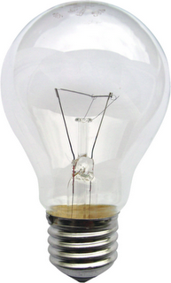
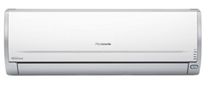

Aktiviti 6: Soalan Objektif
Arahan: Jawab semua soalan. Tiap – tiap soalan diikuti oleh empat pilihan jawapan iaitu A, B, C dan D. bagi tiap – tiap soalan, pilih satu jawapan sahaja.
Markah terkumpul setakat ini
1. Apakah fungsi ruang persendirian?
I. Tempat berehat
II. Membersih dan mengemas diri
III. Berinteraksi dengan ahli keluarga
IV. Menyimpan barang – barang
Fatimah ingin mengecat bilik istirehat yang bersaiz kecil
2. Apakah warna yang sesuai digunakan supaya biliknya kelihatan luas, sejuk, tenang dan harmoni?
3. Antara berikut, yang manakah menunjukkan penggunaan jenis ruang tempat kediaman dengan betul?
4. Antara berikut, tugasan yang manakah dilakukan secara berkala?
5. Rajah 1 menunjukkan sejenis lampu.

Rajah 1
Antara berikut, jenis pencahayaan manakah akan diperoleh daripada lampu tersebut?
6. Apakah tujuan penjagaan dan pembersihan tempat kediaman?
I. Mewujudkan keceriaan ruang
II. Menghindar pembiakan haiwan perosak
III. Memberi pencahayaan yang mencukupi
IV. Membolehkan kita bekerja dengan selamat
7. Rajah 2 menunjukkan sejenis alat kelengkapan.

Rajah 2
Antara berikut, faktor keselesaan tempat kediaman yang manakah berkaitan dengan alat terebut?
8. Antara berikut, yang manakah merupakan kemasan lantai yang sesuai untuk ruang kediaman?
| Jenis ruang | Kemasan lantai | |
| Bilik mandi | Marmar | |
| Bilik tidur | Parquet | |
| Garaj | Terazo | |
| Ruang tamu | Mozek |
9. Maklumat berikut berkaitan dengan keselesaan tempat kediaman.
- Pintu
- Tingkap
- Kekisi
Pemasangan alatan di tempat kediaman adalah berkaitan dengan faktor keselesaan
I. pengudaraan
II. pencahayaan
III. skema warna
IV. alatan dan kelengkapan
10. Apakah jenis ruang yang digunakan untuk menyedia dan memasak makanan dan minuman?